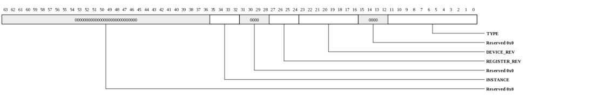
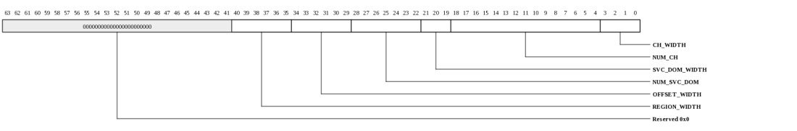
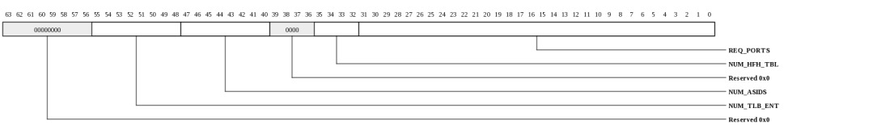
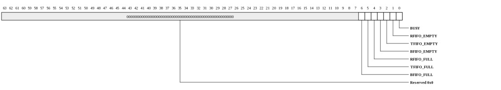
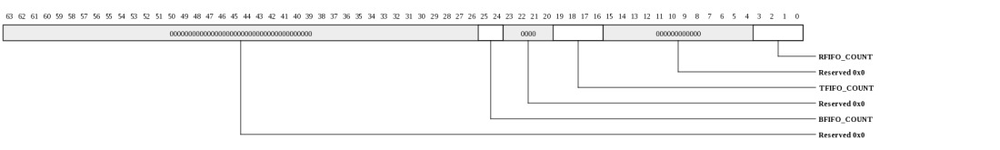
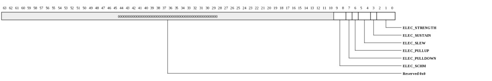
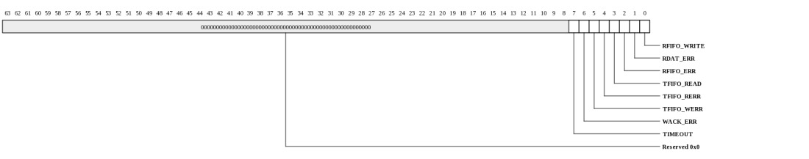

Register Summary
| Address | Register
| 0000 | I2CS_DEV_INFO | 0008 | I2CS_DEV_CTL | 0010 | I2CS_MMIO_INFO | 0018 | I2CS_MEM_INFO | 0020 | I2CS_SCRATCHPAD | 0028 | I2CS_SEMAPHORE0 | 0030 | I2CS_SEMAPHORE1 | 0038 | I2CS_CLOCK_COUNT | 0100 | I2CS_BASELINE_CTL | 0108 | I2CS_FLAG | 0110 | I2CS_FIFO_COUNT | 0118 | I2CS_ELECTRICAL_CONTROL | 0120 | I2CS_BOOT_REVISION_ID | 0130 | I2CS_WRITE_DATA | 0138 | I2CS_READ_DATA | 0140 | I2CS_TFIFO_WRITE_DATA | 0148 | I2CS_TFIFO_READ_DATA | 0158 | I2CS_SLAVE_ADDRESS | 0168 | I2CS_PRESCALER | 0170 | I2CS_GLITCH_MASK | 0188 | I2CS_RDEV_ADDR | 0190 | I2CS_RDEV_ACCESS | 01a0 | I2CS_ADDR_PHASE | 01a8 | I2CS_ACK_CTL | 0200 | I2CS_INT_VEC_W1TC | 0208 | I2CS_INT_VEC_MASK | |
|---|
Register Definitions
Device Info (I2CS_DEV_INFO: 0x0000)
This register provides general information about the device attached to this port and channel.
| Bits | Name | Type | Reset | Description
| 35:32 | INSTANCE | RO | HW | Instance ID for multi-instantiated devices. | 27:24 | REGISTER_REV | RO | 0 | Register format architectural revision. | 23:16 | DEVICE_REV | RO | HW | Device revision ID. | 11:0 | TYPE | RO | 026h | Encoded device Type - 38 to indicate Two-Wire Slave Interface |
|
|---|
Device Control (I2CS_DEV_CTL: 0x0008)
This register provides general device control.
| Bits | Name | Type | Reset | Description
| 3 | SDN_ROUTE_ORDER | RW | 0 | When 1, packets sent on the SDN will be routed x-first. When 0, packets will be routed y-first. This setting must match the setting in the Tiles. Devices may have additional interfaces with customized route-order settings used in addition to or instead of this field. | 2 | RDN_ROUTE_ORDER | RW | 1 | When 1, packets sent on the RDN will be routed x-first. When 0, packets will be routed y-first. This setting must match the setting in the Tiles. Devices may have additional interfaces with customized route-order settings used in addition to or instead of this field. | |
|---|
MMIO Info (I2CS_MMIO_INFO: 0x0010)
This register provides information about how the physical address is interpreted by the IO device. The PA is divided into {CHANNEL,SVC_DOM,IGNORED,REGION,OFFSET}. The values in this register define the size of each of these fields.
| Bits | Name | Type | Reset | Description
| 40:35 | REGION_WIDTH | RO | 0 | Size of the REGION field for this channel. The LSBs of the physical address are interpreted as {REGION,OFFSET} | 34:29 | OFFSET_WIDTH | RO | 16 | Size of the OFFSET field for this channel. The LSBs of the physical address are interpreted as {REGION,OFFSET} | 28:22 | NUM_SVC_DOM | RO | 0 | Number of service domains associated with this channel. | 21:19 | SVC_DOM_WIDTH | RO | 0 | Number of bits of service-domain specifier for this channel. The MSBs of the physical addrress are interpreted as {channel, service-domain} | 18:4 | NUM_CH | RO | 9 | Each configuration channel is mapped to a device having its own config registers. | 3:0 | CH_WIDTH | RO | 4 | Number of bits of channel specifier for all channels. The MSBs of the physical addrress are interpreted as {channel, service-domain} | |
|---|
Memory Info (I2CS_MEM_INFO: 0x0018)
This register provides information about memory setup required for this device.
| Bits | Name | Type | Reset | Description
| 55:48 | NUM_TLB_ENT | RO | 0 | Number of IO TLB entries per ASID. | 47:40 | NUM_ASIDS | RO | 0 | Number of ASIDS supported if this device has an IO TLB (otherwise this field is zero). | 35:32 | NUM_HFH_TBL | RO | 0 | Number of hash-for-home tables that must be configured for this channel. | 31:0 | REQ_PORTS | RO | 32768 | Each bit represents a request (QDN) port on the tile fabric. Bit[15] represents the QDN port used for device configuration and is always set for devices implemented on channel-0. Bit[14] is the first port clockwise from the port used to access configuration space. Bit[13] is the second port in the clockwise direction. Bit[16] is the first port counter-clockwise from the port used to access configuration space. When a bit is set, the device has a QDN port at the associated location. For devices using a nonzero channel, this register may return all zeros. | |
|---|
Scratchpad (I2CS_SCRATCHPAD: 0x0020)
Scratchpad
| Bits | Name | Type | Reset | Description
| 63:0 | SCRATCHPAD | RW | 0 | Scratchpad | |
|---|
Semaphore0 (I2CS_SEMAPHORE0: 0x0028)
Semaphore
| Bits | Name | Type | Reset | Description
| 0 | VAL | RW | 0 | When read, the current semaphore value is returned and the semaphore is set to 1. Bit can also be written to 1 or 0. | |
|---|
Semaphore1 (I2CS_SEMAPHORE1: 0x0030)
Semaphore
| Bits | Name | Type | Reset | Description
| 0 | VAL | RW | 0 | When read, the current semaphore value is returned and the semaphore is set to 1. Bit can also be written to 1 or 0. | |
|---|
Clock Count (I2CS_CLOCK_COUNT: 0x0038)
Clock Count
| Bits | Name | Type | Reset | Description
| 15:1 | COUNT | RO | 0 | Indicates the number of core clocks that were counted during 1000 device clock periods. Result is accurate to within +/-1 core clock periods. | 0 | RUN | RW | 0 | When 1, the counter is running. Cleared by HW once count is complete. When written with a 1, the count sequence is restarted. Counter runs automatically after reset. Software must poll until this bit is zero, then read the CLOCK_COUNT register again to get the final COUNT value. | |
|---|
Baseline Control (I2CS_BASELINE_CTL: 0x0100)
Baseline Control
| Bits | Name | Type | Reset | Description
| 0 | ENABLE | RW | 1 | Interface Enable. | 1: to enable the interface 0: to reset the interface (such as FIFOs and state machines) |
|---|
FLAG (I2CS_FLAG: 0x0108)
FLAG
| Bits | Name | Type | Reset | Description
| 6 | BFIFO_FULL | RO | 0 | 1: BFIFO is full. | 5 | TFIFO_FULL | RO | 0 | 1: TFIFO is full. | 4 | RFIFO_FULL | RO | 0 | 1: RFIFO is full. | 3 | BFIFO_EMPTY | RO | 1 | 1: BFIFO is empty. | 2 | TFIFO_EMPTY | RO | 1 | 1: TFIFO is empty. | 1 | RFIFO_EMPTY | RO | 1 | 1: RFIFO is empty. | 0 | BUSY | RO | 0 | 1: I2C controller is busy. | |
|---|
FIFO Count (I2CS_FIFO_COUNT: 0x0110)
FIFO Count
| Bits | Name | Type | Reset | Description
| 25:24 | BFIFO_COUNT | RO | 0 | n: n active entries in the buffer FIFO (max is 2**1). Each entry has 64 bits + controls. | 0: no active entry in the buffer FIFO (that is empty). 19:16 | TFIFO_COUNT | RO | 0 | n: n active entries in the transmit FIFO (max is 2**3). Each entry has 64 bits. | 0: no active entry in the transmit FIFO (that is empty). 3:0 | RFIFO_COUNT | RO | 0 | n: n active entries in the read FIFO (max is 2**3). Each entry has 64 bits. | 0: no active entry in the receive FIFO (that is empty). |
|---|
Electrical Control (I2CS_ELECTRICAL_CONTROL: 0x0118)
Electrical Control
| Bits | Name | Type | Reset | Description
| 9:8 | ELEC_SCHM | RW | 3 | Schmitt control. | 0: no schmitt 7 | ELEC_PULLDOWN | RW | 0 | 0: No pulldown in IO | 6 | ELEC_PULLUP | RW | 0 | 0: No pullup in IO (use external pull-up resister) | 5:4 | ELEC_SLEW | RW | 3 | Slew rate control | 00 = slowest 11 = fastest 3 | ELEC_SUSTAIN | RW | 0 | 1: Enable sustain keeper, about 100 uA to flip the state | 0: no keeper 2:0 | ELEC_STRENGTH | RW | 1 | Drive strength. | 0 = tristate 1 = 2 ma (default) 2 = 4 ma 3 = 6 ma 4 = 8 ma 5 = 10 ma 6 = 12 ma 7 = RESERVED |
|---|
Boot Revision ID (I2CS_BOOT_REVISION_ID: 0x0120)
Boot Revision ID
| Bits | Name | Type | Reset | Description
| 7:0 | REV_ID | RW | 0 | I2C Boot Code Revision ID. In general, it is written by external I2C device. | |
|---|
I2C RFIFO Write Data (I2CS_WRITE_DATA: 0x0130)
I2C RFIFO Write Data| Bits | Name | Type | Reset | Description
| 63:0 | I2C_WDAT | WO | 0 | Write only register that can be accessed only by external i2c. Write by the RSHIM will be ignored. Read will always return 0. | |
|---|
I2C RFIFO Read Data (I2CS_READ_DATA: 0x0138)
I2C RFIFO Read Data| Bits | Name | Type | Reset | Description
| 63:0 | RDAT | RO | 0 | Contains the receive data, which is pushed by an external i2c device (via the I2CSS I2C Write Data). When this register is read from an external i2c device, receive data will be returned but the read pointer of RFIFO will not be updated. | |
|---|
I2C TFIFO Write Data (I2CS_TFIFO_WRITE_DATA: 0x0140)
I2C TFIFO Write Data| Bits | Name | Type | Reset | Description
| 63:0 | WDAT | RW | 0 | Write data. A write to this register will push the value onto the Transmit FIFO. This is the only RW register that should not be written by external device (no hardware protection). Reading this register will return the last written value. | |
|---|
I2C TFIFO Read Data (I2CS_TFIFO_READ_DATA: 0x0148)
I2C TFIFO Read Data
| Bits | Name | Type | Reset | Description
| 63:0 | RDAT | RO | 0 | Read data. Reading this register from an external i2c device will pop the head of the transmit data FIFO and return that value (up to 8 bytes). When this register is read from a TILE, the most recently popped receive data will be returned but the Transmit FIFO will not be popped. | |
|---|
I2C Slave Address (I2CS_SLAVE_ADDRESS: 0x0158)
I2C 7-bit Slave Address| Bits | Name | Type | Reset | Description
| 7:1 | ADDR | RW | 10h | Specifies the top 7 bits I2C slave address to identify this I2C slave controller on the TILE processor. | |
|---|
I2C Prescaler (I2CS_PRESCALER: 0x0168)
I2C Prescaler| Bits | Name | Type | Reset | Description
| 11:0 | PRESCALER | RW | 098h | Prescaler to select the I2C frequency. SCL frequency can be calculated by | Freq(SCL) = Freq(reference) / (2* PRESCALE + 9). Note: If REF_CLK = 125 MHz, the default I2C frequency = Freq(SCL) = 125M / (2*152 + 9) = 399 KHz. |
|---|
Glitch Mask (I2CS_GLITCH_MASK: 0x0170)
Glitch Mask| Bits | Name | Type | Reset | Description
| 5:0 | CYCLE | RW | 0 | This 6-bit value is used to mask input glitches on SCL and SDA. Any glitches with pulse width (in number of REF_CLK cycles) that is smaller than CYCLE+1 will be removed. For example, with CYCLE=0, any glitches with pulse width of 1 clock cycles or smaller will be removed. Glitches in SCL signal will lock up the I2C controller. | |
|---|
RSHIM Device Address High (I2CS_RDEV_ADDR: 0x0188)
RSHIM Device Address High| Bits | Name | Type | Reset | Description
| 3:0 | HIGH | RW | 0 | Most significant 4-bits of rshim device address. | |
|---|
RSHIM Device Word Read (I2CS_RDEV_ACCESS: 0x0190)
RSHIM Device Word Read| Bits | Name | Type | Reset | Description
| 0 | WORD_READ | RW | 1 | Certain RSHIM device read request may result in a FIFO pop operation. If a device read request pops the FIFO and the device read can not consume all the popped data, then unconsumed data could be lost. In this case, it is desirable for the I2C slave controller not to generate one device read for each byte read request from an external I2C master. | 1: The I2C slave controller schedules one RSHIM device read request for each word read request (word-address-aligned) from an external I2C master. Data from a locally stored buffer will be returned for sequential reads from the external I2C master. External I2C master must start a read request from an 8-byte aligned address to avoid unpredictable results. 0: The I2C slave controller schedules one RSHIM device read request for each byte read request from an external I2C master. The external I2C master can start a read request from an unaligned address (no restriction on byte offset). FIFO reads should be avoided in this setting. |
|---|
Address Phase Control (I2CS_ADDR_PHASE: 0x01a0)
Address Phase Control| Bits | Name | Type | Reset | Description
| 0 | DISABLE | RW | 0 | Normally the I2C slave controller treats the first two bytes (after the 7-bit slave address + Read/Write_n + Ack) as the address phase within the I2C slave controller. The address phase can be disabled by setting DISABLE bit. | 1: disable the address phase. 0: enable the address phase. In the "no-address-phase" mode, an external I2C master device will push all data (note that all payload is treated as data, no address) to the receive FIFO and an RFIFO_WRITE interrupt will be raised when an entry is written to the receive FIFO. It is up to the TILE side software to read from the I2CS_READ_DATA register in a timely fashion. An external I2C master device will read all data from the transmit FIFO and an TFIFO_READ interrupt will be raised when an entry is read from the transmit FIFO. It is up to the TILE side software to write to the I2CS_WRITE_DATA register in a timely fashion. |
|---|
Ack Control (I2CS_ACK_CTL: 0x01a8)
Ack Control| Bits | Name | Type | Reset | Description
| 1 | READ_ACK | RW | 0 | When an external I2C master control reads the I2C slave controller, it is up to I2C slave controller to ack the read data, or nack the read data. | 1: always ack no matter whether the I2C slave controller is ready or not. This mode can be used when the I2C master does not support clock stretching. 0: ack or nack depends on whether the I2C slave controller is ready or not. If the I2C slave controller is not ready, the I2C slave controller will stretch the clock. 0 | WRITE_ACK | RW | 0 | When an external I2C master control writes the I2C slave controller, it is up to I2C slave controller to ack the write data, or nack the write data. | 1: always ack no matter whether the I2C slave controller is ready or not. This mode can be used when an external device does not support nack, or has a different nack definition. If the I2C slave controller is not ready to take the write data, the write request would be corrupted and the I2C slave controller would raise an interrupt (RFIFO_ERR or WACK_ERR). This mode can be used when an SMBus-like protocol is desirable, for example, ack indicates the slave is present, nack indicates the slave is not present. 0: ack or nack depends on whether the I2C slave controller is ready or not. If the I2C slave controller is not ready, the I2C slave controller will nack. |
|---|
Interrupt Vector, write-one-to-clear (I2CS_INT_VEC_W1TC: 0x0200)
Each bit in this register corresponds to a specific interrupt. Hardware sets the bit when the associated condition has occurred. Writing a 1 clears the status bit.
| Bits | Name | Type | Reset | Description
| 7 | TIMEOUT | W1TC | 0 | Timed out waiting for write data from the external device; for example a first byte was received but a second byte did not | 6 | WACK_ERR | W1TC | 0 | A read or write request was received but cannot be fulfilled; for example the BFIFO is full | 5 | TFIFO_WERR | W1TC | 0 | The transmit FIFO received write data but the FIFO was full. | 4 | TFIFO_RERR | W1TC | 0 | The transmit FIFO was read but there was no data in the FIFO. | 3 | TFIFO_READ | W1TC | 0 | A value was popped from the transmit FIFO | 2 | RFIFO_ERR | W1TC | 0 | The receive FIFO received write data but the FIFO was full. | 1 | RDAT_ERR | W1TC | 0 | The receive FIFO was read but there was no data in the FIFO | 0 | RFIFO_WRITE | W1TC | 0 | A value was written to the receive FIFO | |
|---|
Interrupt Vector Mask (I2CS_INT_VEC_MASK: 0x0208)
Each bit in this register corresponds to a specific interrupt. When set, the associated interrupt will not be dispatched.
| Bits | Name | Type | Reset | Description
| 7 | TIMEOUT | RW | 1 | Timed out waiting for write data from the external device; for example a first byte was received but a second byte did not. | 6 | WACK_ERR | RW | 1 | A read or write request was received but cannot be fulfilled; for example the BFIFO is full. | 5 | TFIFO_WERR | RW | 1 | The transmit FIFO received write data but the FIFO was full. | 4 | TFIFO_RERR | RW | 1 | The transmit FIFO was read but there was no data in the FIFO. | 3 | TFIFO_READ | RW | 1 | A TFIFO entry was popped from the transmit FIFO. | 2 | RFIFO_ERR | RW | 1 | The receive FIFO received write data but the FIFO was full. | 1 | RDAT_ERR | RW | 1 | The receive FIFO was read but there was no data in the FIFO. | 0 | RFIFO_WRITE | RW | 1 | An RFIFO entry was written to the read FIFO. | |
|---|
Copyright © 2014 Tilera® Corporation. All rights reserved. Printed in the United States of America.
No part of this book may be reproduced, stored in a retrieval system, or transmitted in any form or by any means, electronic, mechanical, photocopying, recording, or otherwise, except as may be expressly permitted by the applicable copyright statutes or in writing by the Publisher.
The following are registered trademarks of Tilera Corporation: Tilera and the Tilera logo. The following are trademarks of Tilera Corporation: Embedding Multicore, The Multicore Company, Tile Processor, TILE Architecture, TILE64, TILEPro, TILEPro36, TILEPro64, TILExpress, TILExpress-64, TILExpressPro-64, TILExpress-20G, TILExpressPro-20G, TILExpressPro-22G, iMesh, TileDirect, TILEmpower, TILEmpower-Gx, TILEncore, TILEncorePro, TILEncore-Gx, TILE-Gx, TILE-Gx16, TILE-Gx36, TILE-Gx64, TILE-Gx100, TILE-Gx3000, TILE-Gx5000, TILE-Gx8000, DDC (Dynamic Distributed Cache), Multicore Development Environment, Gentle Slope Programming, iLib, TMC (Tilera Multicore Components), hardwall, Zero Overhead Linux (ZOL), MiCA (Multicore iMesh Coprocessing Accelerator), and mPIPE (multicore Programmable Intelligent Packet Engine). All other trademarks and/or registered trademarks are the property of their respective owners.
Third-party software: The Tilera IDE makes use of the BeanShell scripting library. Source code for the BeanShell library can be found at the BeanShell website (http://www.beanshell.org/developer.html).
The following is a trademark of Marvell Semiconductor, Inc.: Distributed Switching Architecture (DSA).
This document contains advance information on Tilera products that are in development, sampling or initial production phases. This information and specifications contained herein are subject to change without notice at the discretion of Tilera Corporation.
No license, express or implied by estoppels or otherwise, to any intellectual property is granted by this document. Tilera disclaims any express or implied warranty relating to the sale and/or use of Tilera products, including liability or warranties relating to fitness for a particular purpose, merchantability or infringement of any patent, copyright or other intellectual property right.
Products described in this document are NOT intended for use in medical, life support, or other hazardous uses where malfunction could result in death or bodily injury.
THE INFORMATION CONTAINED IN THIS DOCUMENT IS PROVIDED ON AN "AS IS" BASIS. Tilera assumes no liability for damages arising directly or indirectly from any use of the information contained in this document.